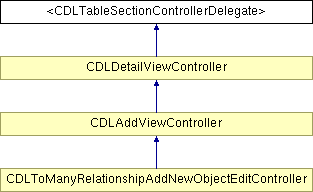

Main Page
Classes
Files
Class List
Class Hierarchy
Class Members
<CDLTableSectionControllerDelegate> Protocol Reference
Inheritance diagram for <CDLTableSectionControllerDelegate>:

List of all members.
Public Member Functions
(Class)
-
classOfManagedObject
(
NSManagedObject
*)
-
managedObjectForSectionController:
(void)
-
pushViewController:animated:
(void)
-
reloadSectionController:withRowAnimation:
The documentation for this protocol was generated from the following file:
Classes/
CDLTableSectionController.h
All
Classes
Functions
Properties
Generated on Wed Apr 7 21:54:07 2010 for CoreDataLibrary by
1.6.3
 1.6.3
1.6.3